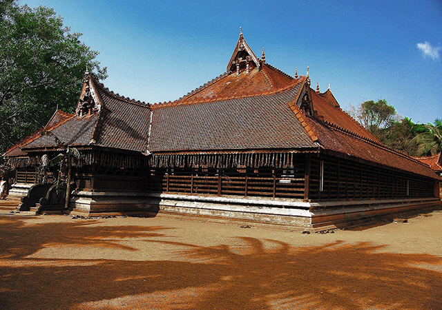
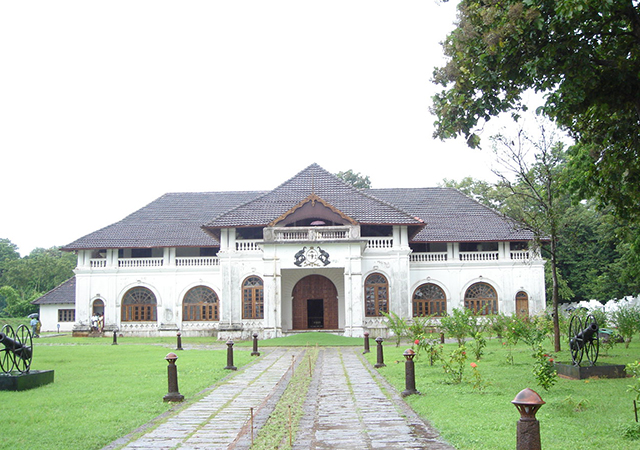
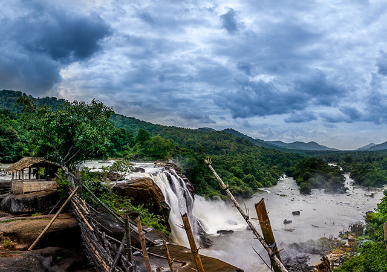
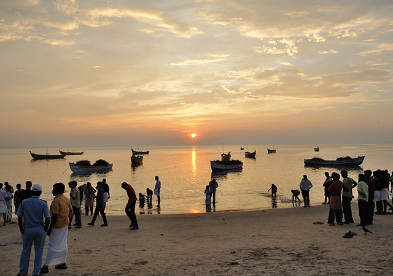
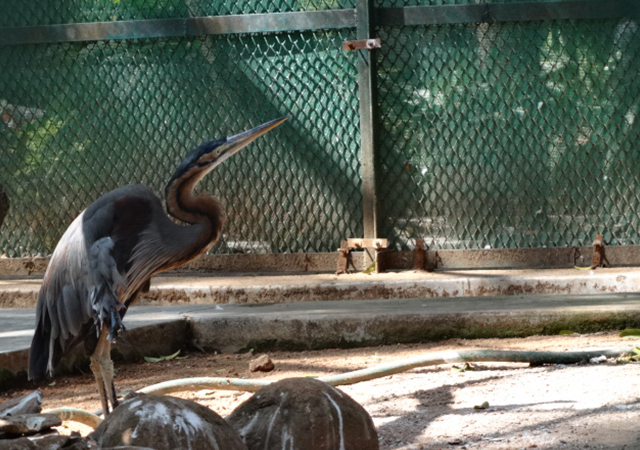

Officially known as the cultural capital of Kerala, Thrissur is famous for fostering classical Keralan performing arts, religious sites and the renowned Thrissur Pooram festival, Onam festival and Vadakkumnathan Temple.Thrissur is from where Kerala gets a fair share of its festive glitter. Thrissur was the capital of the Kingdom of Kochi. The festivals celebrated here are the major attraction for tourists and a visit to Thrissur is incomplete without witnessing these.
1.Kerala Kalamandalam
You may want to pique your interest on what makes Thrissur so culturally important. In that case,head to Kerala Kalamandalam, a residential, premiere learning institute where you have veteran teachers teaching various performing arts unique to South India.Founded in 1927, it was the renowned poet, Vallathol Narayana Menon who discovered the immense potential in performing arts and heralded the starting of this institution. If you are looking for serious insight into the various art forms of Kerala, then this is where you go.

2.Shakthan Thampuran Palace
Shakthan Thampuran, the great Maharaja of Cochin was the person responsible for the progress, commerce and trade of Thrissur. He is also known for maintaining cordial relationships with the Europeans.Shakthan Thampuran Palace is one of the most impressive palaces in Kerala. You can walk around the well-maintained museum and its grounds, as those would help you draw insight into the annals of the ruling dynasty and erstwhile princely states of a bygone era.

3.Athirappilly Waterfalls
Athirappilly waterfalls in Chalakkudy, Thrissur is one of the most popular tourism destinations in Kerala. Located right at the entrance of Sholayar ranges, the waterfalls at Athirappilly has soothing melodious rhythmic sounds that makes it so relaxing and rejuvenating.The natural greenery of the place, combined with the possibilities of entering into the waters and splashing about makes it extremely attractive to the visitors.

4.Chavakkad Beach
One of the must visit beaches of Kerala, Chavakkad Beach is where you can hang out and watch the waves crashing against the rocks. It’s absolutely peaceful, quiet and you can blissfully enjoy the sunset sitting on the golden sands . The beach lies on the coast of Arabian Sea and is just 6 kilometers from Guruvayoor temple.

5.Thrissur Zoo and State Museum
Thrissur Zoo and State Museum, located right in the heart of Thrissur is a place worth visiting when you are in the city. Within the 13.5 acres of a well-maintained compound, you can see so many different kinds of flora and fauna while making friends and faces with the monkeys, playing hide and seek with the crawling reptiles, marveling at the king of the jungle, and enjoying the incredible grace of the deer.
